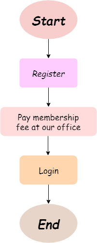

Welcome to Alumni Management System
Let's keep in touch..
Are you missing them? Your coursemates, your squad, your friends who up all night with you for assignments, gathering, events and so on.
Come and join Alumni to keep in touch with your friends that you miss!
Welcome back dearest alumni. Genuinely, one of our greatest assets is our global network of alumni. This page is to celebrate your achievements and provides you an access to our alumni community.
Let's discover how to get involved and connect with the University and its supporters.
We’re currently in touch with over 150,0000 of our alumni from across the world, and we’re still looking for those we’ve lost contact with. Please help us to keep in touch with you.
How to register as a member?
Steps to become a member of Alumni Management System...
